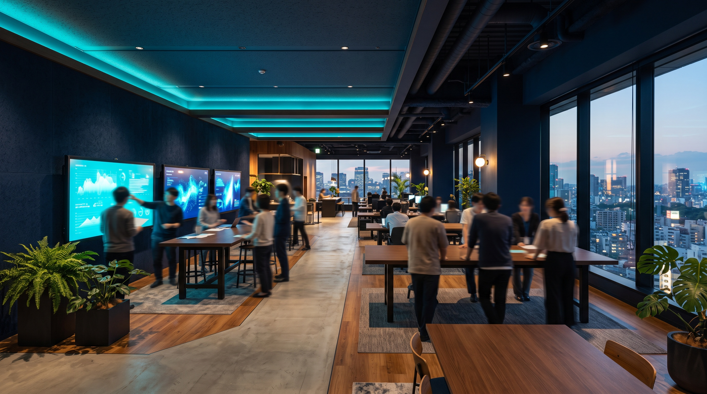

CORPORATE / INTERVIEW
人と組織が、
動きやすい状態をつくる。
採用や組織運営、管理業務を通じて、現場・技術・営業が仕事に集中できる環境を整えています。
仮プロフィール※ 氏名・所属・役職・入社年・前職・担当領域は未確認です
- 所属・役職
- 総務部
- 入社年月
- —
- 前職・これまでのご経験
- —
- 現在の担当業務
- 備品・設備／契約／社内申請／庶務 ほか
CAREER STEP
- 〜2019管理部門（人事・組織運営）
業務を支える立場で組織に関わる
- 2020PAL入社／コーポレート
変化の途中にある会社で、制度と仕組みを整える
- 現在採用・組織運営・社内制度
各部署が仕事を進めやすい環境をつくる
ENTRY
PALに入るまで
キャリアステップ（前職 → PAL入社 → 現在）
これまでのご経験とPALに入ってからの担当範囲を、時系列でご紹介する予定です。
※ 元の仮原稿にあった「2020年中途入社」「前職：管理部門（人事・組織運営）」はデザイン用の仮設定です。ご本人確認前のため、確定情報としては記載していません。
Q1PALに入社したきっかけを教えてください。
会社が変わっていくタイミングで、仕組みを整える仕事に関われることに魅力を感じました。
すでにできあがったものを運用するのではなく、必要なものを一緒につくっていく環境だと思いました。
WORK
総務の仕事
Q2現在担当している総務の仕事内容を教えてください。
備品や設備まわりの対応、契約に関する手続き、社内申請の受付などを担当しています。
日々の庶務も含めて、各部署が困らないように進めています。
Q3総務の仕事で、特にやりがいを感じるのはどんなときですか？
「助かりました」と言ってもらえたときです。
自分の対応で誰かの手間が減っていると分かると、やってよかったと思います。

各部署が仕事に集中できる環境を整え、事業の成長を支える。
- 採用
- 組織運営
- 社内制度
- 管理業務
- 各部署の支援
会社を支えるというより、事業が進みやすい環境をつくる仕事です。
※ この言葉は仮原稿です。正式回答から選び直します。
IMPROVEMENT
日々の工夫
Q4これまでの仕事で印象に残っている出来事や、工夫・改善した経験を教えてください。
手続きの流れを少し変えるだけで、やりとりの回数が減ることがあります。
大きな改善でなくても、毎日のことなので効果は出ると感じています。
※ 具体的なエピソード・事例は、社外公開の可否を確認のうえ、正式回答で差し替えます。
Q5仕事を進めるうえで大切にしていることは何ですか？
正確さと、返事の早さです。
すぐ答えられないことでも、いつまでに確認するかだけは先にお伝えするようにしています。
相談しやすいと思ってもらえることも大事だと考えています。
PEOPLE
人とつながる
直接顧客に向き合う仕事ではありませんが、事業が前に進む速さは変えられます。
Q6他部署の方とは、普段どのように関わっていますか？
物流現場、システム、営業と、部署をまたいでやりとりする機会が多いです。
同じ言葉でも指しているものが違うことがあるので、まず相手の進め方を聞くようにしています。
Q7PALに入社して、成長したと感じることはありますか？
会社全体の動きを見ながら考えるようになりました。
目の前の処理だけでなく、先に起きそうなことを想像して動けるようになったと思います。
Q8職場の雰囲気や、一緒に働くメンバーの魅力を教えてください。
部署をまたいで話す距離が近いところです。
専門が違う人が同じ場で話すので、聞けばだいたい誰かが教えてくれます。
FUTURE
両立と、これから
Q9子育てと仕事を両立するうえで、工夫していることや、PALで助かっていること・良いと感じることを教えてください。
予定があるときは早めに周囲へ共有するようにしています。
チーム内で声を掛け合いながら進められることは助かっています。
※ 制度や取得実績に関する内容は、正式回答の範囲のみを掲載します。
Q10今後チャレンジしてみたいことや目標を教えてください。
各部署の仕事をもっと理解して、手続きそのものを減らせるところを見つけたいです。
Q11弊社のコーポレート業務に従事する方で、向いているのは、どのような人だと思いますか？
細かいことに気づける方、相手の立場で考えられる方だと思います。
決まったことをこなすだけでなく、やり方を変えてみようと思える方も向いています。
Q12これからPALに応募する方へ、メッセージをお願いします。
PALには現場、技術、営業と、さまざまな専門性を持った人がいます。
コーポレートもその一員として、会社を一緒につくっていく仕事です。
1 DAY SCHEDULE
ある一日の流れ。
※ 一日の流れは取材時にお伺いします。